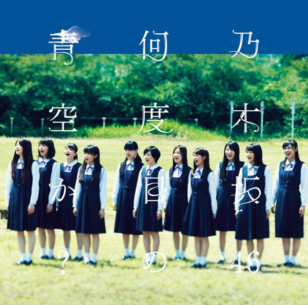

サカミチ
サカミチあの日 僕は咄嗟に嘘をついたあのひぼくはとっさにうそをついた

初収録リリース「何度目の青空か?」のジャケット
乃木坂46
発売日：2014-10-08
収録：何度目の青空か?（10thSG）
種別：アンダー曲
センター：井上小百合
作曲：三輪智也
編曲：京田誠一
ライブ披露：189件
フォーメーション
上が後列、下が前列です。色付きがセンター。（参考データに基づく）
川村真洋
 和田まあや
和田まあや 樋口日奈
樋口日奈伊藤かりん
川後陽菜
畠中清羅
北野日奈子
大和里菜
新内眞衣
永島聖羅
中元日芽香
斉藤優里
 中田花奈
中田花奈能條愛未
齋藤飛鳥
井上小百合
伊藤万理華
参加メンバー（17名）
伊藤万理華、井上小百合、川後陽菜、川村真洋、齋藤飛鳥、斉藤優里、中田花奈、中元日芽香、永島聖羅、能條愛未、畠中清羅、樋口日奈、大和里菜、和田まあや、伊藤かりん、北野日奈子、新内眞衣
この曲が披露されたライブ（189件）
新しい順に20件まで表示しています（全189件）。
同じリリースの曲
何度目の青空か？、遠回りの愛情、転がった鐘を鳴らせ！、私、起きる。、あの日 僕は咄嗟に嘘をついた、Tender days